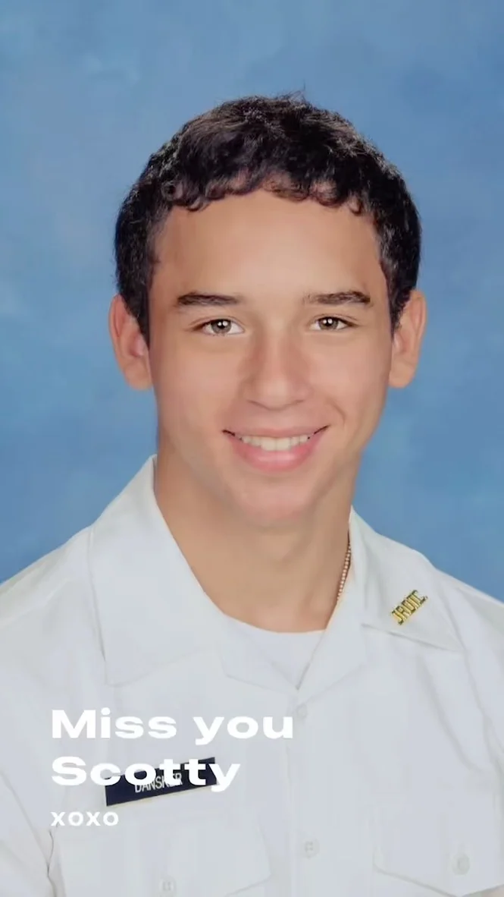
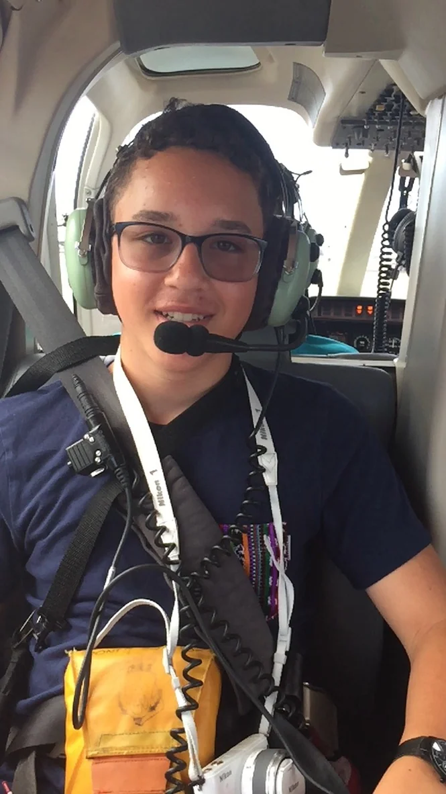
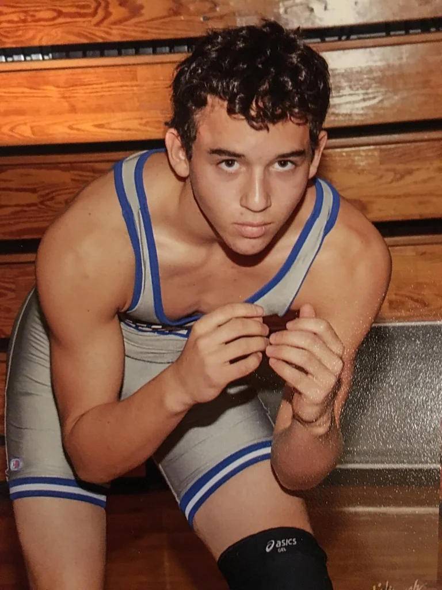
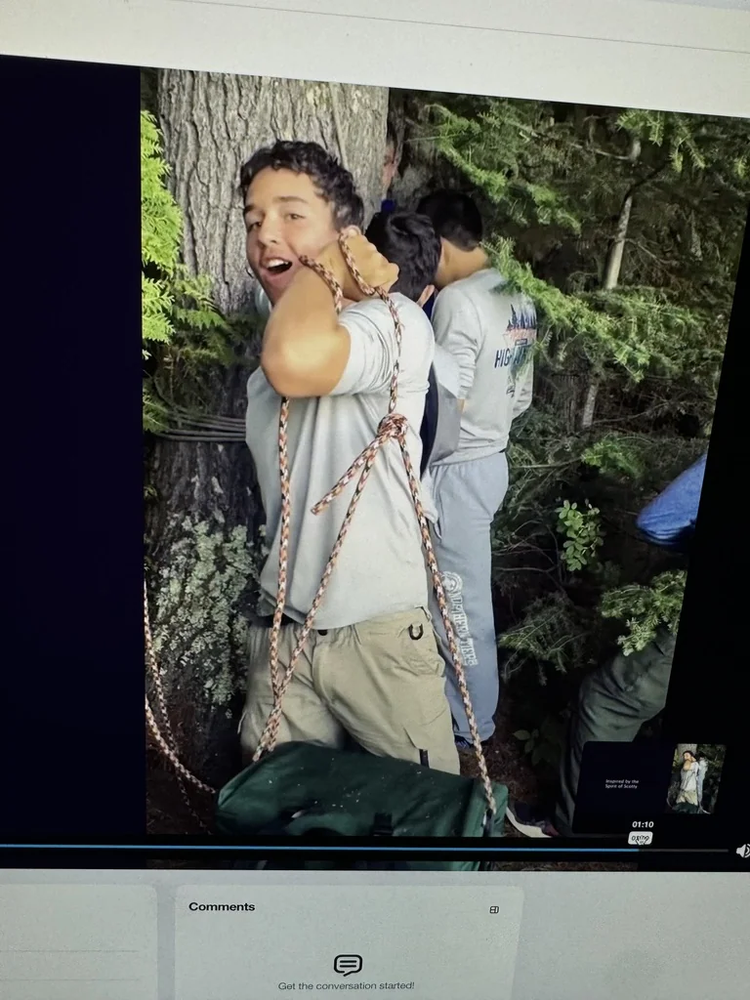
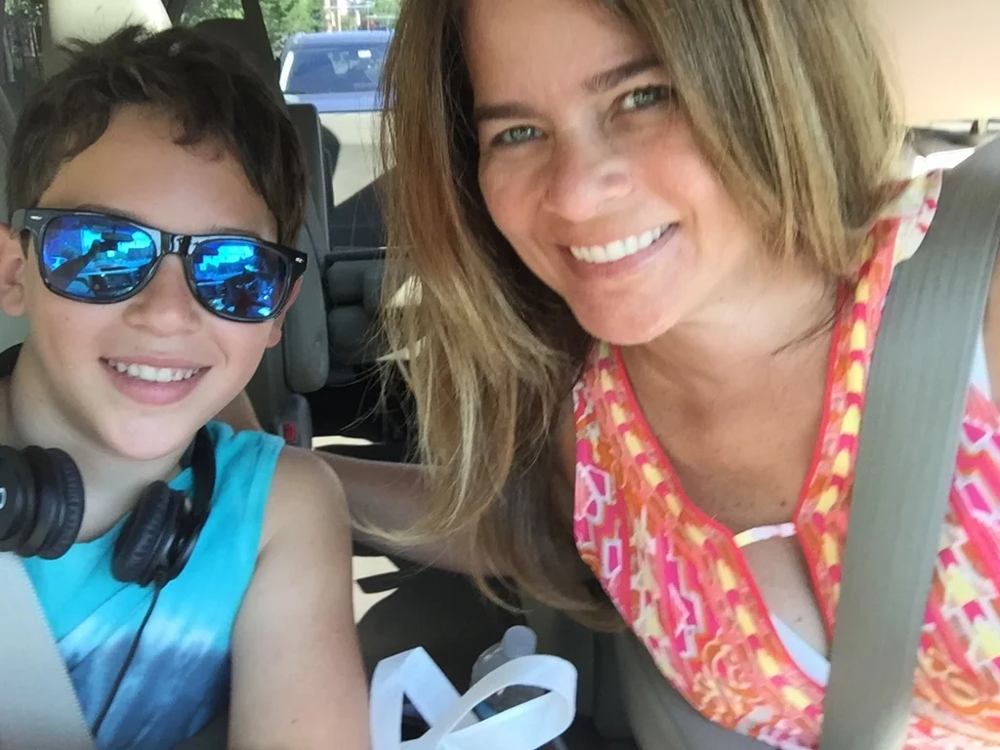

Suicide Prevention
Encouraging honest conversations, reducing stigma, and helping people connect with support.
Celebrating his life. Carrying his spirit forward.
Honoring Scotty through storytelling, suicide prevention, public education, and the simple but powerful reminder that no one has to face life’s hardest moments alone.


The boy behind the mission
Scotty was a son, a brother, a friend, a poet, a Scout, an athlete, an adventurer — and so much more. He loved bright colors, big dreams, and bringing his own energy into every room.
Spirit of Scotty was created to honor his life and carry his love forward. We believe a story can start a conversation, a conversation can create connection, and connection can help someone find hope.
Get to know ScottyMore than a memory
Real moments. Real adventures. The boy we love.




In Scotty's own words
Scotty wrote poetry that expressed his questions, feelings, humor, and hopes. His poems are a precious part of his story — and they deserve to be shared exactly as he wrote them.
Read Scotty’s original poems in full, preserved in his own words.
Explore Scotty’s poetry →
The mission carries on
Our nonprofit is dedicated to creating more moments of understanding, connection, and hope.
Encouraging honest conversations, reducing stigma, and helping people connect with support.
Sharing knowledge and resources that help families and communities talk openly about mental health.
Making space for real experiences and reminding people that they are not alone.


Real people. Real stories. Real hope.
Through S.O.S.: Stories of Survivors, we share conversations about love, loss, resilience, healing, and the power of connection.
Every voice matters. Every story has the potential to reach someone who needs to hear it.
Watch S.O.S. on YouTube ↗Be part of the mission
Your support can help us reach more people with education, resources, and stories of survival.
Help build the reach of Spirit of Scotty.
Ways to give →Collaborate on education, outreach, and awareness.
Explore partnerships →Tell your story or help amplify voices of hope.
Share your interest →